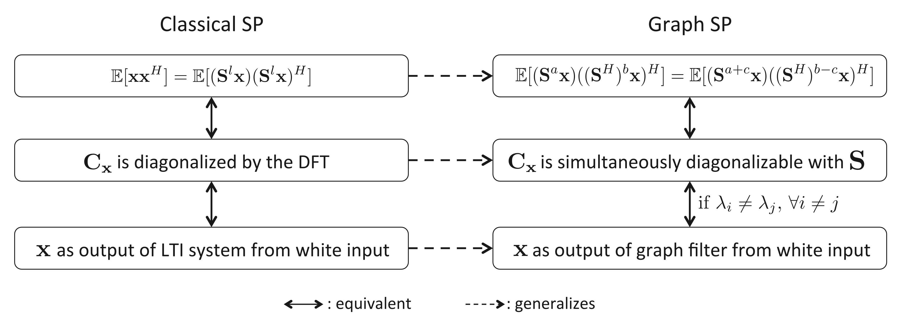

(공부) CGSP – Chap 12.2: Weakly Stationary Graph Processes
Preliminary Study
Simultaneously Diagonalizable
매트릭스 \({\bf A}\)와 \({\bf B}\)가 대각화 가능하다는 것은 아래의 표현을 만족하는 적당한 invertible matrix \({\bf \Psi}_A\), \({\bf \Psi}_B\)와 대각행렬 \({\bf \Lambda}_A\), \({\bf \Lambda}_B\)가 존재한다는 의미가 된다.
\[{\bf A} = {\bf V}_{A} {\bf \Lambda}_A {\bf V}_{A}^{-1}\]
\[{\bf B} = {\bf V}_{B} {\bf \Lambda}_B {\bf V}_{B}^{-1}\]
그리고 만약에 \({\bf V}_{A}={\bf V}_{B}\)이라면 즉
\[{\bf A} = {\bf V} {\bf \Lambda}_A {\bf V}^{-1}\]
\[{\bf B} = {\bf V} {\bf \Lambda}_B {\bf V}^{-1}\]
이라면 \(\{{\bf A},{\bf B}\}\)가 simultaneously diagonalzable 하다고 표현한다.
Commute
두 matrix \({\bf A}\)와 \({\bf B}\)에 대하여
\[{\bf A}{\bf B}= {\bf B}{\bf A}\]
인 관계가 성립하면 두 매트릭스가 commute 한다고 표현한다. 그런데 \({\bf A}{\bf B}={\bf A}{\bf B}\)의 조건은 \({\bf A}, {\bf B}\)가 동시대각화가능할 (simultaneously diagonalzable) 조건과 같다. 1 따라서 simultaneously diagonalzable 는 commute와 같은 말이라 생각해도 무방하다.
1 필요충분조건이다.
참고: 위키피디아..
Shift Invariant Filter
ref: Djuric and Richard (2018) Chap 8.3 의 내용 중 일부
Djuric, Petar, and Cédric Richard. 2018. Cooperative and Graph Signal Processing: Principles and Applications. Academic Press.
Define the matrix \({\bf B}\) as periodic shift matrix such that
\[ {\bf B} = \begin{bmatrix} 0 & 0 & 0 & \dots & 0 & 1 \\ 1 & 0 & 0 & \dots & 0 & 0 \\ 0 & 1 & 0 & \dots & 0 & 0 \\ \dots & \dots & \dots & \dots & \dots & \dots\\ 0 & 0 & \dots & 1 & 0 & 0 \\ 0 & 0 & \dots & 0 & 1 & 0 \\ \end{bmatrix}.\]
A generic filter \({\boldsymbol h}\) is given by its \(z\)-transform
\[h(z)=h_0z^0+h_1z^{-1}+\cdots +h_{N-1}z^{-(N-1)}\]
where \(s_{n-1}=z^{-1}s_n\). In vector notation, and with respect to the standard basis \({\bf I}\), the filter is represented by the matrix \({\bf H}\), a polynomial in the cyclic shift
\[{\bf H}=h({\bf B})=h_0{\bf B}^0+h_1{\bf B}^1+\cdots+h_{N-1}{\bf B}^{N-1}.\]
Filters are shift invariant iff
\[z\cdot h(z) = h(z)\cdot z\]
or from the matrix representation
\[{\bf B}h({\bf B})=h({\bf B}){\bf B}.\]
Example
Let \({\bf B}\) as
B= [0 1 0 0 0 0 0
0 0 1 0 0 0 0
0 0 0 1 0 0 0
0 0 0 0 1 0 0
0 0 0 0 0 1 0
0 0 0 0 0 0 1
1 0 0 0 0 0 0]7×7 Matrix{Int64}:
0 1 0 0 0 0 0
0 0 1 0 0 0 0
0 0 0 1 0 0 0
0 0 0 0 1 0 0
0 0 0 0 0 1 0
0 0 0 0 0 0 1
1 0 0 0 0 0 0Define \({\boldsymbol h}\) as
3-element Vector{Float64}:
0.3333333333333333
0.3333333333333333
0.3333333333333333Furthermore define \({\bf H}=h({\bf B})=h_0{\bf B}^0+h_1{\bf B}^1+h_2{\bf B}^2\)
7×7 Matrix{Float64}:
0.333333 0.333333 0.333333 0.0 0.0 0.0 0.0
0.0 0.333333 0.333333 0.333333 0.0 0.0 0.0
0.0 0.0 0.333333 0.333333 0.333333 0.0 0.0
0.0 0.0 0.0 0.333333 0.333333 0.333333 0.0
0.0 0.0 0.0 0.0 0.333333 0.333333 0.333333
0.333333 0.0 0.0 0.0 0.0 0.333333 0.333333
0.333333 0.333333 0.0 0.0 0.0 0.0 0.333333Observe following:
Thus, filter \({\boldsymbol h}\) is shift invariant filter and matrix \({\bf H}\) is shift invariant operator.
note: \({\boldsymbol h}\) is moving average filter.
note: for any \({\bf x}\), \({\bf H}{\bf x}\) is definded by
\[\left[\frac{x_{n-1}+x_n+x_1}{3},\frac{x_n+x_1+x_2}{3},\dots,\frac{x_{n-3}+x_{n-2}+x_n}{3}\right].\]
7-element Vector{Float64}:
1.0
1.0
1.3333333333333333
1.6666666666666665
2.0
1.6666666666666665
1.3333333333333333note: In some sense, the matrix \({\bf H}{\bf x}\) can be thought as generalized version of \({\boldsymbol h}\star {\bf x}\) where \(\star\) is convolution up to shift
9-element Vector{Float64}:
0.3333333333333334
0.6666666666666667
1.0
1.0
1.3333333333333333
1.6666666666666667
2.0
1.3333333333333333
0.6666666666666667Finally, we observe that, from the Cayley-Hamilton Theorem, \({\bf B}\) satisfies its characteristic polynomial \(\Delta({\bf B})\), where \(\Delta(\lambda)\) is the determinant of \(\lambda{\bf I}-{\bf B}\). The characteristic polynomial \(\Delta({\bf B})\) has degree \(N\), so, in DSP, as described so far, linear filters are (matrix) polynomial with degree at most \(N-1\).
이 부분은 책에 써있길래 가져오긴 했는데, 무슨 의미인지 모르겠음
Weakly Stationary Graph Processes
We extend three equivalent definitions of weak stationary in time to the graph domain, the most common being the invariance of the first and second moments to time shifts.
Definition 12.1. Given a normal shift operator \({\bf S}\), a zero-mean random process \({\bf x}\) is weakly stationary with respect to \({\bf S}\) if it can be written as the response of a linear shift-invariant graph filter \({\bf H}=\sum_{l=0}^{N-1}h_l{\bf S}^l\) to a zero-mean white input \({\bf n}\).
Definition 12.2. Given a normal shift operator \({\bf S}\), a zero-mean random process \({\bf x}\) is weakly stationary with respect to \({\bf S}\) is the following two equivalent properties hold
(a) For any set of nonnegative integers \(a\),\(b\), and \(c\leq b\) it holds that
\[\mathbb{E} \bigg[ \big({\bf S}^a{\bf x}\big)\Big(\big({\bf S}^H)^b {\bf x}\Big)^H \bigg]=\mathbb{E}\bigg[\big({\bf S}^{a+c}{\bf x}\big)\Big(\big({\bf S}^H\big)^{b-c}{\bf x} \Big)^H \bigg]\]
(b) Matrices \({\bf C}_{\bf x}\) and \({\bf S}\) are simultaneously diagonalizable.
The statements in Definition 12.2 can indeed be shown to be equivalent (Marques et al. 2017). Definition 12.2b characterizes stationarity from a graph frequency perspective by requiring the covariance \({\bf C}_{\bf x}\) to be diagonalized by the GFT matrix \({\bf V}\). When particularized to time, Definition 12.2b requires \({\bf C}_{\bf x}\) to be diagonalized by the Fourier matrix and, therefore, must be circulant. This fact is exploited in classical signal processing to define the PSD of a stationary process as the eigenvalues of the circulant covariance matrix, motivating the PSD definition in Section 12.2.1
(a)와 (b)의 동치성을 수식적으로 살펴보자.
먼저, (b) 조건에서 (a) 조건이 어떻게 유도되는지 보자.
- 조건은 자기상관 행렬 $ _{} = $와 시스템 행렬 $ $가 동시에 대각화 가능하다는 것을 의미한다. 이는 두 행렬이 같은 고유벡터 집합에 대해 대각화될 수 있음을 나타내며, 다음과 같은 고유벡터 $ $와 고유값 대각행렬 $ _S $ , $ _C $가 존재함을 의미한다:
\[ \mathbf{S} = \mathbf{V} \mathbf{\Lambda}_S \mathbf{V}^H \]
\[ \mathbf{C}_{\mathbf{x}} = \mathbf{V} \mathbf{\Lambda}_C \mathbf{V}^H \]
이제 (a) 조건의 좌변을 계산해 보자:
\[ \mathbb{E}\left[\left(\mathbf{S}^a \mathbf{x}\right) \left(\left(\mathbf{S}^H\right)^b \mathbf{x}\right)^H\right] \]
\[ = \mathbb{E}\left[\left(\mathbf{V} \mathbf{\Lambda}_S^a \mathbf{V}^H \mathbf{x}\right) \left(\mathbf{x}^H \mathbf{V} \mathbf{\Lambda}_S^b \mathbf{V}^H \right)\right] \]
\[ = \mathbf{V} \mathbf{\Lambda}_S^a \mathbf{V}^H \mathbb{E}\left[\mathbf{x} \mathbf{x}^H\right] \mathbf{V}\mathbf{\Lambda}_S^b \mathbf{V}^H \]
\[ = \mathbf{V} \mathbf{\Lambda}_S^a \mathbf{V}^H \mathbf{C}_{\mathbf{x}} \mathbf{V} \mathbf{\Lambda}_S^b \mathbf{V}^H \]
\[ = \mathbf{V} \mathbf{\Lambda}_S^a \mathbf{\Lambda}_C \mathbf{\Lambda}_S^b \mathbf{V}^H \]
같은 방식으로, (a) 조건의 우변을 계산하면:
\[ \mathbb{E}\left[\left(\mathbf{S}^{a+c} \mathbf{x}\right) \left(\left(\mathbf{S}^H\right)^{b-c} \mathbf{x}\right)^H\right] \]
\[ = \mathbf{V} \mathbf{\Lambda}_S^{a+c} \mathbf{\Lambda}_C \mathbf{\Lambda}_S^{b-c} \mathbf{V}^H \]
여기서 $ _S $와 $ C $가 모두 대각행렬이므로, 두 결과는 동일하게 된다. 따라서 $ $와 $ {} $가 동시에 대각화 가능하다는 조건은 (a) 조건을 만족함을 보인다.
- 조건에서 (b)를 유도하는 과정을 살펴보자.
먼저, (a) 조건은 다음과 같다:
\[ \mathbb{E}\left[\left(\mathbf{S}^a \mathbf{x}\right) \left(\left(\mathbf{S}^H\right)^b \mathbf{x}\right)^H\right] = \mathbb{E}\left[\left(\mathbf{S}^{a+c} \mathbf{x}\right) \left(\left(\mathbf{S}^H\right)^{b-c} \mathbf{x}\right)^H\right] \]
\(a = 0\), \(b = 0\), \(c = 1\)인 경우를 고려해 보자. 이 경우, (a) 조건은 다음과 같이 쓸 수 있다:
\[ \mathbb{E}\left[\mathbf{x}\mathbf{x}^H\right] = \mathbb{E}\left[\left(\mathbf{S} \mathbf{x}\right)\left(\mathbf{S}^H \mathbf{x}\right)^H\right] \]
이 식은 다음과 같이 쓸 수 있다:
\[ \mathbf{C}_{\mathbf{x}} = \mathbf{S} \mathbf{C}_{\mathbf{x}} \mathbf{S}^H \]
이 식은 $ $와 $ {} $가 서로 가환한다는 의미를 가진다. 즉, $ $와 $ {} $는 공통의 고유벡터를 가진다는 것을 의미한다. 이는 두 행렬이 동시에 대각화될 수 있음을 암시한다.
Thus far, we have presented three extensions of the concept of stationarity into the realm of graph processes, two of which are equivalent and, hence, grouped in Definition 12.2. At this point, the attentive reader might have a natural inquiry. Are Definitions 12.1 and 12.2 equivalent for general graphs, as they are for stationarity in time? In fact, it can be shown that Definitions 12.1 and 12.2 are equivalent for any graph \({\bf S}\) that is normal and whose eigenvalues are all distinct (Marques et al. 2017). Follwing figure presents a concise summary of the definitions discussed in this section.

Coexisting Approaches
Stationary graph processes were first defined and analyzed in (Girault 2015). The fundamental problem identified there is that GSOs do not preserve energy in general and therefore cannot be isometric (Gavili and Zhang 2017). This problem is addressed in (Girault, Gonçalves, and Fleury 2015) with the definition of an isometric graph shift that preserves the eigenvector space of the Laplacian GSO but modifies its eigenvalues.
A stationary graph process is then defined as one whose probability distributions are invariant with respect to multiplications with the isometric shift. One drawback of this approach is that the isometric shift is a complex-valued operator and has a sparsity structure (if any) different from \({\bf S}\). By contrast, the vertex-based definition in
\[\mathbb{E} \bigg[ \big({\bf S}^a{\bf x}\big)\Big(\big({\bf S}^H)^b {\bf x}\Big)^H \bigg]=\mathbb{E}\bigg[\big({\bf S}^{a+c}{\bf x}\big)\Big(\big({\bf S}^H\big)^{b-c}{\bf x} \Big)^H \bigg]\]
is based on the original GSO \({\bf S}\), which is local and real-valued. As a result, above Eq. provides intuition on the relations between stationarity and locality, which can be leveraged to develop stationarity tests or estimation schemes that work with local information. Graph stationarity was also studied in (Perraudin and Vandergheynst 2017) where the requirement of having a covariance matrix diagonalizable by the eigenvectors of the Laplacian GSO is adopted as a definition. This condition is shown to be equivalent to statistical invariance with respect to the translation operator introduced in (Shuman, Ricaud, and Vandergheynst 2016). When the shift \({\bf S}\) coincides with the Laplacian of the graph and the eigenvalues of \({\bf S}\) are all distinct, Definitions 12.1 and 12.2 are equivalent to those in Perraudin and Vandergheynst (2017). Hence, the definitions presented here differ from (Perraudin and Vandergheynst 2017) in that we consider general normal shifts instead of Laplacians and that we see Definition 12.1 as a definition, not a property. These are mathematically minor differences that are important in practice though; see Segarra et al. (2017) for more details.
Summary
이 섹션에선 우리는 \(\bar{\bf x}:=\mathbb{E}[{\bf x}]={\bf 0}\)을 가정한다. 일반적인 우리에게 익숙한 정상시계열의 정의는 아래와 같다.
(정의1) \({\bf x}\)가 정상시계열이다. \(\overset{def}{\Longleftrightarrow}\) 모든 \(l=0,1,2,\dots\)에 대하여 \(\mathbb{E}[{\bf x}{\bf x}^H] = \mathbb{E}\big[({\bf B}^l{\bf x})({\bf B}^l{\bf x})^H \big]\)이 성립한다.
또한 \({\bf x}\)가 정상시계열이라면 적당한 white noise \({\bf n}\)에 대하여 \({\bf x} = {\bf H}{\bf n}\)를 만족하는 shift invariant operater \({\bf H}=\sum_{l=0}^{N-1}h_l {\bf B}^l\)가 존재함이 알려져 있다. (Wold’s theorem의 특수한 형태인 듯) 이 정리를 마치 정의와 같이 사용하면 아래와 같이 시계열의 정상성을 정의할 수 있다.
(정의2) \({\bf x}\)가 정상시계열이다. \(\overset{def}{\Longleftrightarrow}\) 임의의 \({\bf n}\)에 대하여 \({\bf x}={\bf H}{\bf n}\)를 만족하는 shift invariant opertor \({\bf H}\)가 항상 존재한다.
한편 \({\bf C}_{\bf x}=\mathbb{E}[{\bf x}{\bf x}^H]={\bf H}{\bf H}^H\)와 같이 표현가능한데 \({\bf H}\)와 \({\bf B}\)는 같은 고유벡터행렬을 가지고2 \({\bf H}^H{\bf H}\)는 \({\bf H}\)와 같은 고유벡터행렬을 가지므로3 결국 \({\bf C}_{\bf x}\)와 \({\bf B}\)는 같은 고유벡터 행렬을 가진다고 볼 수 있다. 따라서 아래와 같이 쓸 수 있다.
2 shift invariant operator의 정의에 의하여 \({\bf H}{\bf B}={\bf B}{\bf H}\)가 성립하니까
3 \({\bf H}{\bf H}^H={\bf \Psi}{\bf D}{\bf D}^H{\bf \Psi}^H\)이니까, 여기에서 \({\bf D}\)는 \({\bf H}\)의 고유벡터행렬임
\[\begin{align} {\bf C}_{\bf x} & = {\bf \Psi} \cdot \text{적당한대각행렬} \cdot {\bf \Psi}^H \\ &= {\bf DFT}^H \cdot \text{적당한대각행렬} \cdot {\bf DFT} \end{align}\]
이러한 직관에서 아래와 같이 시계열의 정상성에 대한 세번째 정의를 이해할 수 있다.
(정의3) \({\bf x}\)가 정상시계열이다. \(\overset{def}{\Longleftrightarrow}\) \({\bf C}_{\bf x}\)는 \({\bf DFT}\) 행렬로 대각화 가능하다. (\({\bf C}_{\bf x}\)와 \({\bf B}\)는 같은 고유벡터 행렬을 가진다.)
정상시계열에 대한 세가지 정의는 아래와 같이 정상 그래프신호로 확장가능하다.

차이점은 Wold’s theorem 이 성립하기 위해서 \(\lambda_i \neq \lambda_j, \forall i\neq j\) 조건이 추가된다는 것이다.
12.2.1. PSD
- Stationarity reduces the degrees of freedom of a random graph process, thus facilitating its description and understanding. It follows from Definition 12.2b that one can express the remaining degrees of freedom in the frequency domain via the notion of PSD, as defined next.
Definition 12.3. The PSD of a random process \(\mathbf{x}\) that is stationary with respect to \(\mathbf{S} = \mathbf{V} \mathbf{\Lambda} \mathbf{V}^H\) is the nonnegative \(N \times 1\) vector \(\mathbf{p}\)
\[ \mathbf{p} := \text{diag} \left( \mathbf{V}^H \mathbf{C}_{\mathbf{x}} \mathbf{V} \right). \]
Observe that because \(\mathbf{C}_{\mathbf{x}}\) is diagonalized by \(\mathbf{V}\) (see ) the matrix \(\mathbf{V}^H \mathbf{C}_{\mathbf{x}} \mathbf{V}\) is diagonal and it follows that the PSD in Eq. (12.4) corresponds to the eigenvalues of the positive semidefinite covariance matrix \(\mathbf{C}_{\mathbf{x}}\). Thus, Eq. (12.4) is equivalent to
\[ \mathbf{C}_{\mathbf{x}} = \mathbf{V} \text{diag}(\mathbf{p}) \mathbf{V}^H. \]
* 식 \(\mathbf{C}_{\mathbf{x}} = \mathbf{V} \text{diag}(\mathbf{p}) \mathbf{V}^H\)가 성립하는 이유는 다음과 같다.
먼저, 자기상관 행렬 \(\mathbf{C}_{\mathbf{x}}\)는 주어진 랜덤 프로세스 \(\mathbf{x}\)의 공분산 행렬로, 이는 양의 준정부호(positive semidefinite) 행렬이다. 이 행렬은 대각화할 수 있으며, 문제에서 주어진 \(\mathbf{S} = \mathbf{V} \mathbf{\Lambda} \mathbf{V}^H\)와 마찬가지로 \(\mathbf{V}\)에 의해 대각화된다. 따라서 \(\mathbf{C}_{\mathbf{x}}\)는 다음과 같이 표현할 수 있다:
\[ \mathbf{C}_{\mathbf{x}} = \mathbf{V} \mathbf{\Lambda}_C \mathbf{V}^H \]
여기서 \(\mathbf{\Lambda}_C\)는 \(\mathbf{C}_{\mathbf{x}}\)의 고유값들을 가지는 대각 행렬이다.
파워 스펙트럼 밀도(PSD)의 정의에 따르면, \(\mathbf{p} = \text{diag}(\mathbf{V}^H \mathbf{C}_{\mathbf{x}} \mathbf{V})\)는 자기상관 행렬 \(\mathbf{C}_{\mathbf{x}}\)의 대각 성분들, 즉 고유값들을 모은 벡터이다. 따라서 \(\mathbf{\Lambda}_C\)는 \(\text{diag}(\mathbf{p})\)로 표현될 수 있다.
이를 종합하면, \(\mathbf{C}_{\mathbf{x}}\)는 \(\mathbf{V}\)와 \(\mathbf{\Lambda}_C = \text{diag}(\mathbf{p})\)에 의해 대각화될 수 있으며, 따라서 \(\mathbf{C}_{\mathbf{x}}\)는 다음과 같이 쓸 수 있다:
\[ \mathbf{C}_{\mathbf{x}} = \mathbf{V} \text{diag}(\mathbf{p}) \mathbf{V}^H \]
이것이 식 \(\mathbf{C}_{\mathbf{x}} = \mathbf{V} \text{diag}(\mathbf{p}) \mathbf{V}^H\)가 성립하는 이유다. \(\mathbf{C}_{\mathbf{x}}\)는 \(\mathbf{V}\)에 의해 대각화될 수 있으며, 이때의 고유값들이 \(\mathbf{p}\)로 표현되기 때문이다.
- Zero-mean white noise is an example of a random process that is stationary with respect to any graph shift \(\mathbf{S}\). The PSD of white noise with covariance \(\mathbb{E}[\mathbf{nn}^H] = \sigma^2 \mathbf{I}\) is \(\mathbf{p} = \sigma^2 \mathbf{1}\). Also notice that, by definition, any random process \(\mathbf{x}\) is stationary with respect to the shift \(\mathbf{S} = \mathbf{C}_{\mathbf{x}}\) defined by its covariance matrix, with corresponding PSD \(\mathbf{p} = \text{diag}(\mathbf{\Lambda})\). This can be exploited in the context of network topology inference. Given a set of graph signals \(\{\mathbf{x}_r\}_{r=1}^R\), it is common to infer the underlying topology by building a graph \(\mathbf{G}_{\text{corr}}\) whose edge weights correspond to cross-correlations among the entries of the signals. In that case, the process generating those signals is stationary in the shift given by the adjacency of \(\mathbf{G}_{\text{corr}}\); see [23] for details. A random process \(\mathbf{x}\) is also stationary with respect to the shift given by its precision matrix, which is defined as the (pseudo-)inverse \(\Theta = \mathbf{C}_{\mathbf{x}}^{\dagger}\). The PSD, in this case, is \(\mathbf{p} = \text{diag}(\mathbf{\Lambda})^{\dagger}\). This is particularly important when \(\mathbf{x}\) is a Gaussian Markov Random Field (GMRF) whose Markovian dependence is captured by the unweighted graph \(\mathbf{G}_{\text{MRF}}\). It is well known [24, Ch. 19] that in these cases \(\Theta_{ij}\) can be nonzero only if \((i,j)\) is either a link of \(\mathbf{G}_{\text{MRF}}\), or an element in the diagonal. Thus, any GMRF is stationary with respect to the shift \(\mathbf{S} = \mathbf{\Theta}\), which captures the conditional dependence between the elements of \(\mathbf{x}\).
* 백색 잡음(Zero-mean white noise)은 어떤 그래프 시프트 연산자 \(\mathbf{S}\)에 대해서도 정상적인(stationary) 랜덤 프로세스의 예시이다. 백색 잡음의 공분산이 \(\mathbb{E}[\mathbf{nn}^H] = \sigma^2 \mathbf{I}\)로 주어질 때, 이 백색 잡음의 PSD는 \(\mathbf{p} = \sigma^2 \mathbf{1}\)로 표현된다. 여기서 \(\mathbf{1}\)은 모든 원소가 1인 벡터를 의미한다. 랜덤 프로세스 \(\mathbf{x}\)는 공분산 행렬 \(\mathbf{C}_{\mathbf{x}}\)로 정의된 시프트 연산자 \(\mathbf{S} = \mathbf{C}_{\mathbf{x}}\)에 대해 항상 정상적이다. 이 경우에 해당하는 PSD는 \(\mathbf{p} = \text{diag}(\mathbf{\Lambda})\)로 나타낼 수 있다. 이 특성은 네트워크 토폴로지 추론과 같은 응용 분야에서 활용될 수 있다. 여러 그래프 신호들 \({\mathbf{x}_r}_{r=1}^R\)이 주어졌을 때, 이러한 신호들의 교차 상관 관계를 반영하여 그래프 \(\mathbf{G}_{\text{corr}}\)을 구축함으로써 기본적인 토폴로지를 추론하는 것이 일반적이다. 이 경우, 이러한 신호들을 생성하는 프로세스는 \(\mathbf{G}_{\text{corr}}\)의 인접 행렬에 의해 주어지는 시프트 연산자에 대해 정상적이다. 랜덤 프로세스 \(\mathbf{x}\)는 그 공분산 행렬의 (유사)역행렬(pseudo-inverse)로 정의되는 정밀 행렬(precision matrix)에 의해 주어지는 시프트 연산자에 대해서도 정상적이다. 이 경우의 PSD는 \(\mathbf{p} = \text{diag}(\mathbf{\Lambda})^{\dagger}\)로 표현된다. 여기서 \(\dagger\)는 유사역행렬을 의미한다. 이 개념은 특히 \(\mathbf{x}\)가 가우시안 마르코프 랜덤 필드(GMRF)일 때 중요하다. GMRF의 마르코프 의존성은 가중치가 없는(unweighted) 그래프 \(\mathbf{G}_{\text{MRF}}\)에 의해 포착된다. 잘 알려진 바에 따르면, 이러한 경우 \(\Theta_{ij}\)는 \((i,j)\)가 \(\mathbf{G}_{\text{MRF}}\)의 링크이거나 대각선 원소일 때만 0이 아닐 수 있다. 따라서, 어떤 GMRF도 \(\mathbf{x}\)의 원소들 간의 조건부 독립성을 포착하는 희소 시프트 연산자 \(\mathbf{S} = \mathbf{\Theta}\)에 대해 정상적이다.
** 랜덤 프로세스 \(\mathbf{x}\)는 그 공분산 행렬의 (유사)역행렬로 정의되는 정밀 행렬(precision matrix)에 의해 주어지는 시프트 연산자에 대해서도 정상적이다. 이 경우의 PSD는 \(\mathbf{p} = \text{diag}(\mathbf{\Lambda})^{\dagger}\)로 표현된다. 여기서 \(\dagger\)는 유사역행렬을 의미한다. 이 개념은 특히 \(\mathbf{x}\)가 가우시안 마르코프 랜덤 필드(GMRF)일 때 중요하다. GMRF의 마르코프 의존성은 가중치가 없는(unweighted) 그래프 \(\mathbf{G}_{\text{MRF}}\)에 의해 포착된다. 잘 알려진 바에 따르면, 이러한 경우 $_{ij} $는 \((i,j)\)가 \(\mathbf{G}_{\text{MRF}}\)의 링크이거나 대각선 원소일 때만 0이 아닐 수 있다. 따라서, 어떤 GMRF도 \(\mathbf{x}\)의 원소들 간의 조건부 독립성을 포착하는 희소 시프트 연산자 \(\mathbf{S} = \mathbf{\Theta}\)에 대해 정상적이다.
이를 좀 더 자세히 설명하면, 정밀 행렬은 공분산 행렬의 역행렬로, 변수 간의 조건부 독립성을 나타낸다. 만약 어떤 변수 \(\mathbf{x}_i\)와 \(\mathbf{x}_j\)가 다른 변수들이 주어진 상태에서 독립이라면, 정밀 행렬의 해당 위치 \(\Theta_{ij}\)는 0이 된다. 일반적으로 공분산 행렬이 정확히 가역(invertible)하지 않을 수 있으므로, 유사역행렬(pseudo-inverse)을 사용하여 정밀 행렬을 계산할 수 있다. 가우시안 마르코프 랜덤 필드(GMRF)는 가우시안 분포를 따르는 변수들이 마르코프 속성을 갖는 랜덤 필드이다. 마르코프 속성은 변수 \(\mathbf{x}_i\)가 다른 변수 \(\mathbf{x}_j\)와의 관계에서 특정 변수들만을 통해 영향을 받는다는 것을 의미한다. 이 관계는 그래프의 형태로 표현할 수 있는데, 그래프의 각 노드는 변수에 해당하고, 그래프의 엣지는 변수 간의 조건부 의존성을 나타낸다.
예를 들어, 세 개의 변수 \(\mathbf{x}_1\), \(\mathbf{x}_2\), \(\mathbf{x}_3\)이 있다고 가정할 때, 이 변수들이 GMRF를 이루며 \(\mathbf{x}_1\)과 \(\mathbf{x}_2\)가 직접적으로 연결되고, \(\mathbf{x}_2\)와 \(\mathbf{x}_3\)도 직접적으로 연결되어 있지만, \(\mathbf{x}_1\)과 \(\mathbf{x}_3\)는 \(\mathbf{x}_2\)를 통해서만 상호작용한다고 하자. 이 경우, 정밀 행렬 \(\mathbf{\Theta}\)는 다음과 같은 형태를 가질 수 있다:
\[ \mathbf{\Theta} = \begin{pmatrix} \Theta_{11} & \Theta_{12} & 0 \\ \Theta_{12} & \Theta_{22} & \Theta_{23} \\ 0 & \Theta_{23} & \Theta_{33} \end{pmatrix} \]
여기서 \(\Theta_{13} = 0\)임을 알 수 있다. 이는 \(\mathbf{x}_1\)과 \(\mathbf{x}_3\)가 조건부 독립임을 나타내며, \(\mathbf{x}_2\)를 통해서만 상호작용함을 의미한다. 이러한 정밀 행렬을 시프트 연산자로 사용하면, GMRF는 이러한 시프트에 대해 정상적인 랜덤 프로세스가 된다. 이 경우의 파워 스펙트럼 밀도(PSD)는 \(\mathbf{p} = \text{diag}(\mathbf{\Lambda})^{\dagger}\)로 표현된다. 여기서 \(\mathbf{\Lambda}\)는 정밀 행렬의 고유값이고, \(\dagger\)는 유사역행렬을 의미한다. GMRF의 경우, 정밀 행렬을 시프트 연산자로 사용하면 변수들 간의 조건부 독립성을 효과적으로 표현할 수 있으며, 이러한 관계에 대해 정상적이라는 특성을 갖게 된다. 이는 네트워크나 그래프 구조에서 변수들 간의 관계를 분석하는 데 중요한 개념이다.
** 가우시안 마르코프 랜덤 필드(GMRF)의 예시와 GMRF가 아닌 예시를 소개하겠다.
[GMRF의 예시]
1. 2D 격자 그래프 모델
가장 일반적인 GMRF 예시는 2차원 격자 그래프 모델이다. 이 모델은 이미지 처리와 같은 분야에서 자주 사용된다. 각 노드는 이미지의 픽셀에 해당하며, 각 노드는 그 주변에 있는 네 개의 이웃 노드(위, 아래, 왼쪽, 오른쪽)와만 연결된다. 이 연결은 각 픽셀이 인접한 픽셀들과만 상호작용하고, 더 멀리 떨어진 픽셀들과는 직접적인 상호작용이 없다는 것을 나타낸다. 따라서 이러한 구조는 GMRF의 조건부 독립성 조건을 만족한다.
예를 들어, 픽셀 \(x_{i,j}\)는 픽셀 \(x_{i-1,j}\), \(x_{i+1,j}\), \(x_{i,j-1}\), \(x_{i,j+1}\)와는 상호작용하지만, 직접적으로 연결되지 않은 다른 모든 픽셀과는 독립이다. 이를 수식으로 나타내면 다음과 같다:
\[ P(x_{i,j} \mid \text{other pixels}) = P(x_{i,j} \mid x_{i-1,j}, x_{i+1,j}, x_{i,j-1}, x_{i,j+1}) \]
2. 트리 그래프 모델
또 다른 GMRF의 예시는 트리 구조를 가진 그래프이다. 트리 그래프에서는 각 노드가 부모 노드와 자식 노드로 연결되어 있으며, 형제 노드끼리는 직접적인 연결이 없다. 이러한 구조 역시 조건부 독립성 조건을 만족한다. 예를 들어, 노드 \(x_i\)는 부모 노드 \(x_{parent}\)와 자식 노드 \(x_{child1}\), \(x_{child2}\) 등과 상호작용하지만, 형제 노드들 \(x_{sibling1}\), \(x_{sibling2}\) 등과는 부모 노드를 통해서만 상호작용한다.
[GMRF가 아닌 예시]
1. 완전 연결 그래프 (Fully Connected Graph)
완전 연결 그래프는 모든 노드가 서로 직접 연결된 그래프이다. 이 경우, 모든 노드가 다른 모든 노드와 상호작용하므로, 조건부 독립성이 성립하지 않는다. 따라서 완전 연결 그래프는 GMRF가 아니다. 예를 들어, 세 개의 노드 \(x_1\), \(x_2\), \(x_3\)가 있을 때, \(x_1\)과 \(x_2\), \(x_1\)과 \(x_3\), 그리고 \(x_2\)와 \(x_3\) 모두가 직접적으로 연결되어 있다면, \(x_1\)이 주어졌을 때 \(x_2\)와 \(x_3\)이 독립이라는 조건이 성립하지 않는다.
2. 순환 그래프 (Cyclic Graph)
순환 그래프(cyclic graph)는 각 노드가 서로 순환적으로 연결된 구조를 가지며, 이 경우에도 GMRF가 아닐 수 있다. 예를 들어, 세 개의 노드 \(x_1\), \(x_2\), \(x_3\)가 있고, \(x_1\)이 \(x_2\)와 \(x_3\)에 연결되어 있으며, \(x_2\)와 \(x_3\)도 서로 연결되어 있다고 하자. 이 경우, \(x_1\)이 주어졌을 때도 \(x_2\)와 \(x_3\) 간의 상호작용이 여전히 남아 있을 수 있으므로, 조건부 독립성이 성립하지 않아 GMRF가 되지 않는다.
이러한 예시들을 통해 GMRF와 GMRF가 아닌 구조를 구분할 수 있다. GMRF의 핵심은 특정 노드가 다른 노드들과 어떻게 조건부 독립성을 가지는지에 있으며, 이 조건부 독립성은 그래프의 구조에 의해 결정된다.